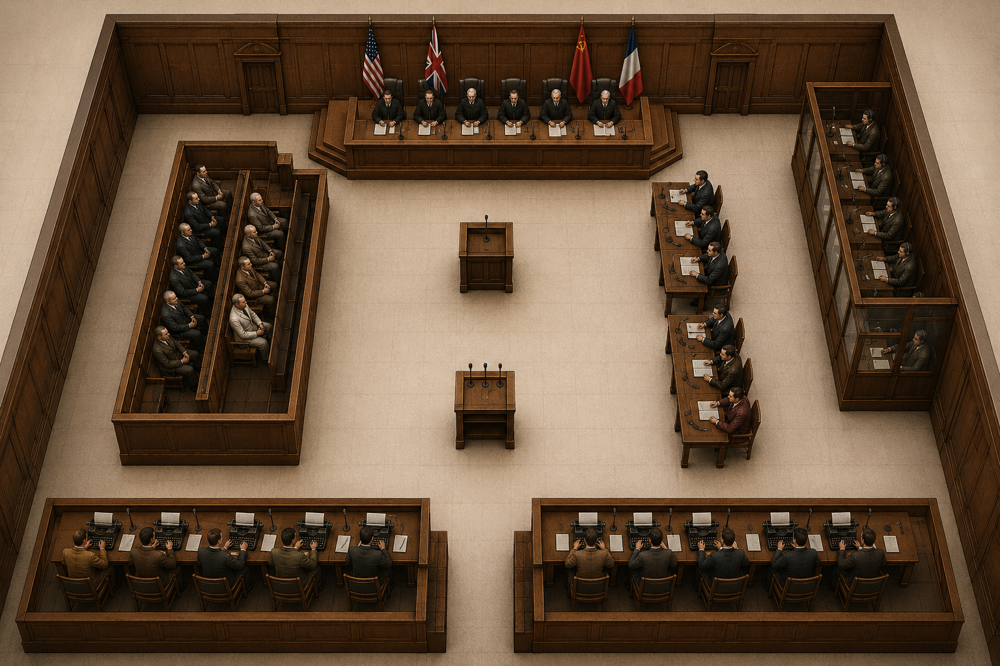

Материал готов
Редакционное задание
Зал №600
Вы — журналист, прибывший в Нюрнберг, чтобы подготовить материал о Международном военном трибунале.
Исследуйте зал, нажимайте на ключевые зоны, изучайте сведения и выбирайте, какие факты записать в блокнот.
Место в блокноте ограничено: выбирайте только самые важные заметки.

Заметки корреспондента
Зал №600
Исследуйте зал и выбирайте факты, которые попадут в ваш журналистский блокнот.
Записано: 0/6
Материал для записи
Выберите зону
После клика по зоне здесь появятся факты, которые можно добавить в блокнот.